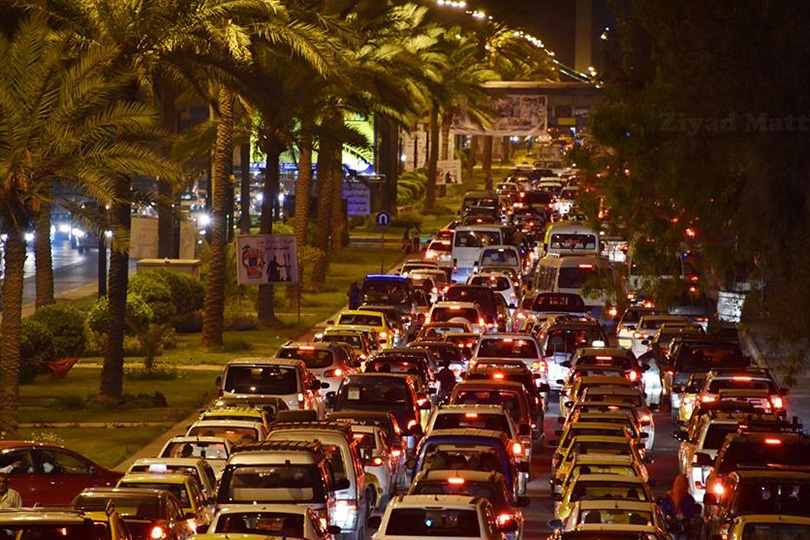
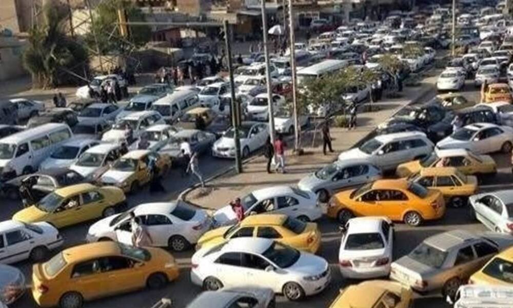
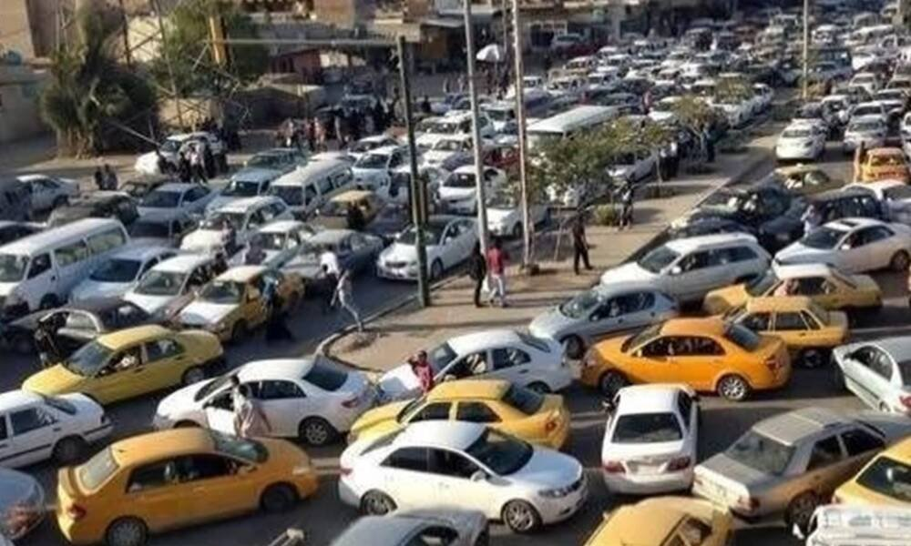
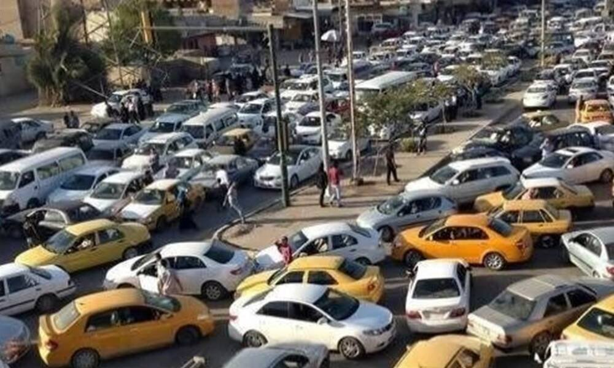
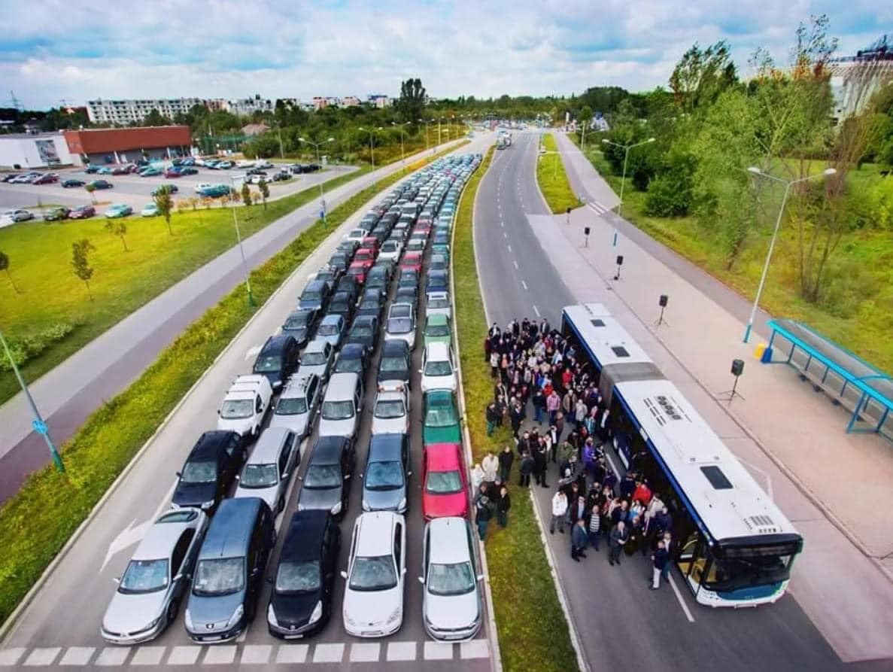
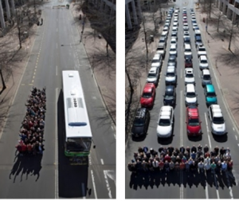

الخط العام
المشكلة:
النتائج, اثار سلبية:
الاسباب
/\
/\
/\
/\
اسبات جانبية: الجدران الحجرية التي تسد بعض الطرقات, و كثرة نقاط التفتيش
سوء تخطيط و ادارة الشوارع و المنشئات


 


الخط العام
خريطة مسارات النقل العام (العام-الخاص: كوسترات و كيات) و يسمح
للمستخدم باضافتها و التصويت على كل مسار (لتكون الخريطة اكثر دقة
مستقبلا)
بعد اضافة المسارات من المستخدم لن تضاف الى الخريطة الرئيسية مباشرة, بل يقوم الادمن بتوثيقها فتتم اضافتها الى الخريطة الرئيسية
توفير خريطة لمسارات النقل العام (الارخص) سيزيد اقبال الناس على النقل العام بدل الخاص: ما سيقلل من
اعداد
السيارات في الشوراع ما يقلل الازدحامات و الحوادث المرورية
بعد اضافة المسارات من المستخدم لن تضاف الى الخريطة الرئيسية مباشرة, بل يقوم الادمن بتوثيقها فتتم اضافتها الى الخريطة الرئيسية
مميزاته و طريقة الاستخدام

